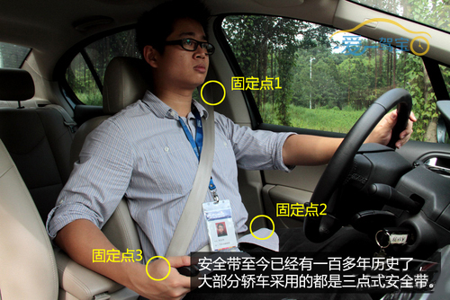
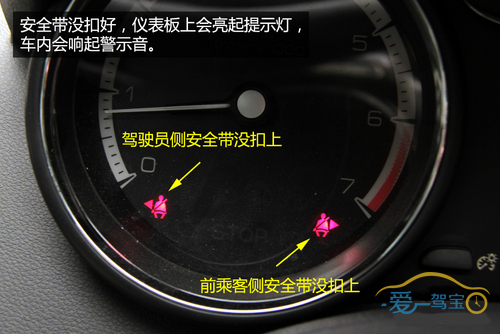
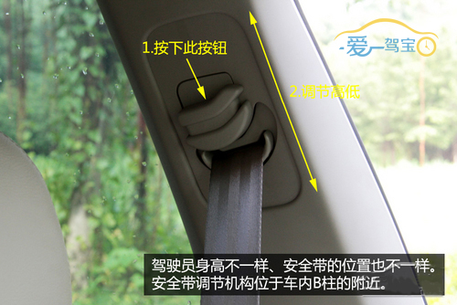
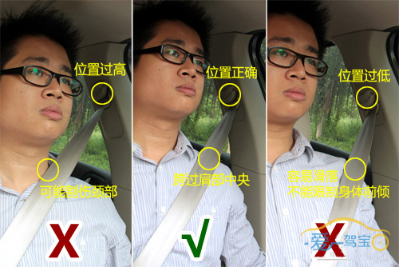
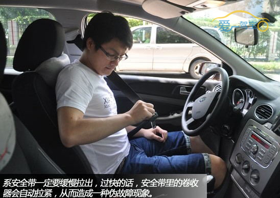
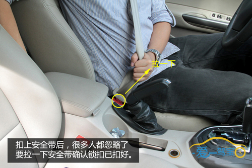
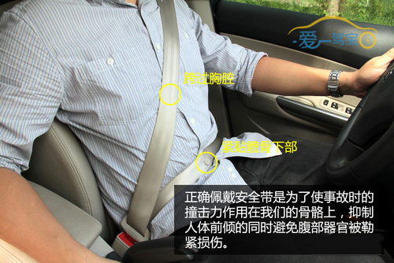

关于安全带及安全带警示灯

现代汽车上使用的三点式安全带的发明者是瑞典沃尔沃公司的尼尔斯·博林。在博林的“汽车乘员合理约束系统要素”专利中，规定了三点式安全带的基本特征。作为一个基本理念，他设计的三点式安全带将搭扣置于一侧而不是中部，这一设计不仅符合工程学原理，同时也更具人性化。

当驾乘人员没有扣上安全带开动车辆，仪表盘会亮起红色警告灯，同时车内也会响起警示音。
操作步骤
1调节安全带位置是首要任务

使用安全带的第一步是调节好安全带肩部的位置。安全带位置调节机构位于B住附近，可以上下移动使三点式安全带适应不同身高的驾驶员。

从上图中我们可以了解到，当安全带肩带位置太高时，会有可能割伤驾乘人员颈部；而当安全带肩带位置太低时，安全带肩带容易滑落导致无法限制驾乘人员身体前倾。所以在调节安全带高度时，我们应使安全带肩带跨过我们肩部的中央（如上图所示）。
2用手握住搭扣锁和锁舌，缓慢地拉出安全带。

3将安全带卡扣插入扣锁中，直至听到卡塔声，然后再拉一下安全带，确认锁扣扣好。

4调整坐姿，以最适合自己驾驶的状态坐好。

 爱驾宝温馨提示
爱驾宝温馨提示